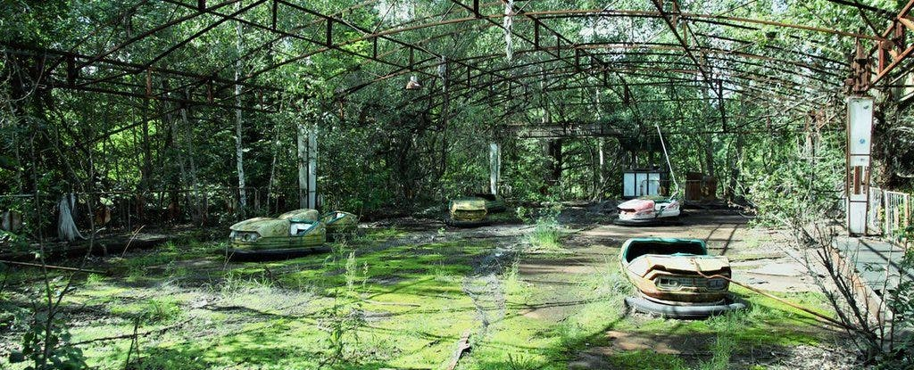

Chernobyl é uma cidade localizada no norte da Ucrânia, na região de Kiev, e é mundialmente conhecida pelo trágico acidente nuclear que ocorreu em 26 de abril de 1986. Antes do desastre, Chernobyl era uma cidade industrial com aproximadamente 14.000 habitantes.
A cidade estava intimamente ligada à Usina Nuclear de Chernobyl, que fica a cerca de 14 quilômetros de distância.

Após o acidente, a cidade foi evacuada e transformada em uma zona de exclusão devido aos altos níveis de radiação. Hoje, Chernobyl e a área ao redor são lugares abandonados, com muitas das estruturas da cidade e dos arredores permanecendo como estavam há décadas.
A natureza recuperou grande parte da área, e a fauna selvagem prospera na ausência de atividade humana.